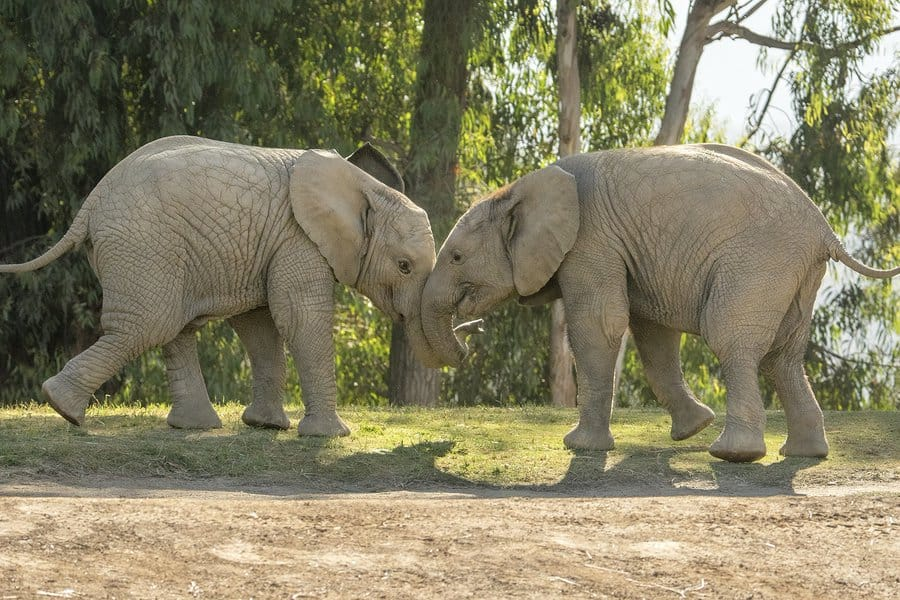
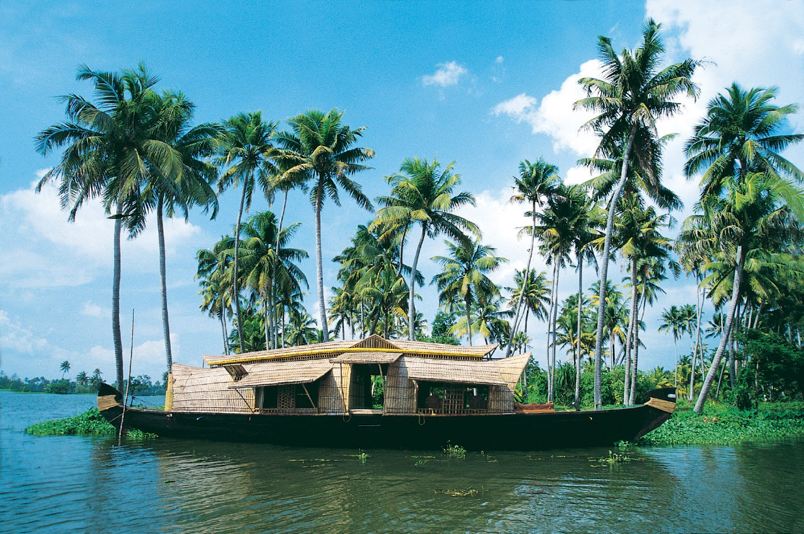
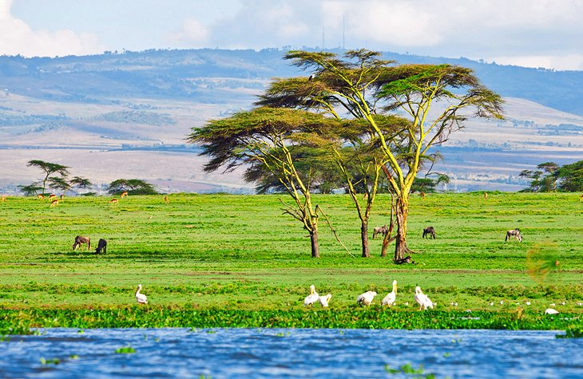

 The wild roars and nature comes alive in Kenya! Kenya’s protected areas are home to different variety of flora and fauna species. Each wilderness area is specially branded because it has something unique to offer.
 Explore the coral reefs while snorkeling or go on a guided safari drive in the Shimba Hills National Reserve. Interact with the native Kenyan people during a cultural visit to the coastal villages.
 Different lakes in Kenya poses different appeals.The bottom line is that natural beauty on these lakes is superb. There are also literally dozens of interesting and fun things you could do around the lakes.
Experience the adventure of an African wildlife safari in Kenya’s national parks and game reserves. Our tour packages feature unforgettable game drives and overnight stops at your choice of lodges or camps. Natural World Safaris provides tour packages to suit your schedule – choose from our 3 to 12-day tours. We will gladly accommodate whatever length trip works best for you. And, we’re always available for your special requests. Just ask!
You may choose the Amboseli national park day trip with possible Mount Kilimanjaro views, the Lakes Nakuru & Naivasha area attractions day tour which includes wildlife and bird viewing plus a boat ride and walking safari on the Crescent island, Ol Pejeta wildlife sanctuary day tour with a stop at the equator crossing and rich wildlife drives at the private sanctuary or the activity themed day trip to the Lake Naivasha area attractions which include a hike and cycling at the Hell’s gate national park.
Mount Kenya & Mount Kilimanjaro both located in East Africa are Africa’s highest and second highest mountains. Despite their location in the tropics and near the equator, both mountains are endowed with magnificent snow capped peaks. Hiking Mount Kenya targets the point Lenana at 4.985 Metres above sea level. Hiking Mount Kilimanjaro targets the Kibo point at 5.895 metres above sea level.